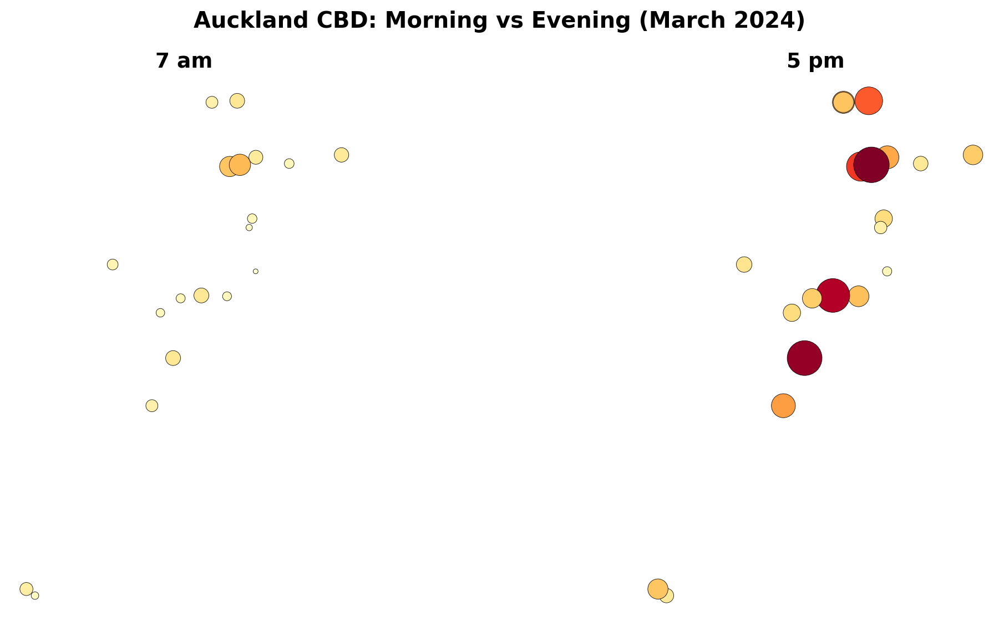
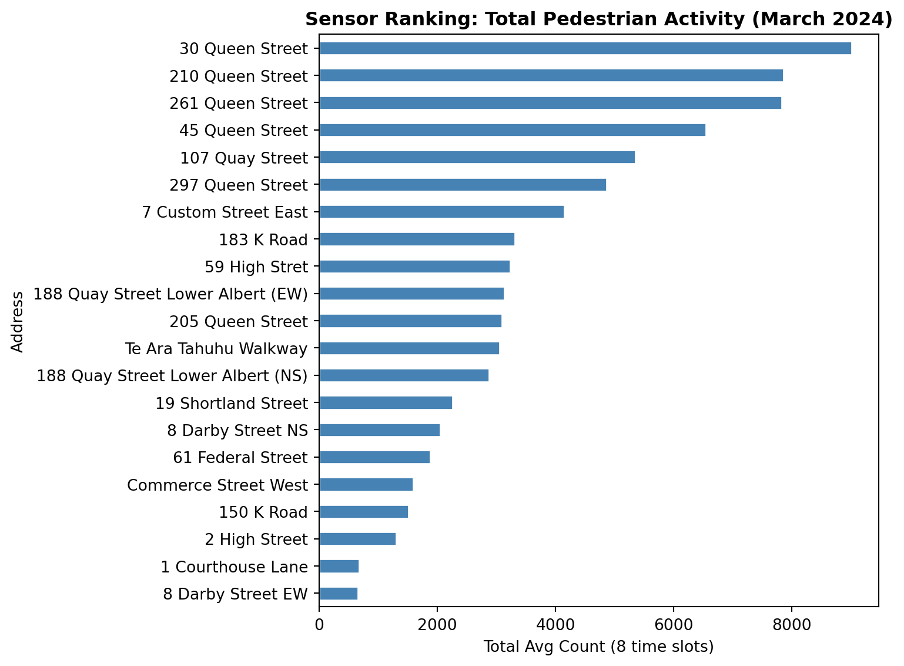

In this short tutorial you will put pedestrian count data on a map. The goal is simple: see where people walk in Auckland CBD and how that changes throughout the day.
You do not need to memorise the code. Focus on understanding the logic of each step and interpreting the maps you produce.
Duration: approximately 30 minutes
What you need:
Python 3.10+ with pandas, geopandas, matplotlib, folium, and mapclassify installed
The files akl_ped-2024.csv and akl_ped-Geodata.csv
Step 1: Load and Clean the Data
We start by loading the pedestrian counts and doing some basic cleaning.
import pandas as pdimport geopandas as gpdimport matplotlib.pyplot as plt# Load the pedestrian dataped = pd.read_csv("data/akl_ped-2024.csv")# Remove rows that are not actual dataped = ped.dropna(subset=["Date", "Time"]).copy()ped = ped[ped["Date"] !="Daylight Savings"].copy()# Convert the Date column to a proper date formatped["Date"] = pd.to_datetime(ped["Date"])# Extract the hour number from the Time column (e.g. "7:00-7:59" becomes 7)ped["hour"] = ped["Time"].str.split(":").str[0].astype(int)# Extract the month number (e.g. March = 3)ped["month"] = ped["Date"].dt.monthprint(f"We have {ped.shape[0]} rows and {ped.shape[1]} columns")ped.head(3)
We have 8783 rows and 25 columns
Date
Time
107 Quay Street
Te Ara Tahuhu Walkway
Commerce Street West
7 Custom Street East
45 Queen Street
30 Queen Street
19 Shortland Street
2 High Street
...
8 Darby Street EW
8 Darby Street NS
261 Queen Street
297 Queen Street
150 K Road
183 K Road
188 Quay Street Lower Albert (EW)
188 Quay Street Lower Albert (NS)
hour
month
0
2024-01-01
6:00-6:59
78.0
53.0
24.0
9.0
87.0
67.0
10.0
11.0
...
8.0
22.0
75.0
77.0
15.0
68.0
53.0
115.0
6
1
1
2024-01-01
7:00-7:59
201.0
39.0
29.0
38.0
143.0
123.0
12.0
21.0
...
6.0
21.0
93.0
73.0
21.0
56.0
74.0
81.0
7
1
2
2024-01-01
8:00-8:59
644.0
55.0
50.0
52.0
243.0
291.0
62.0
23.0
...
9.0
34.0
186.0
157.0
31.0
75.0
132.0
150.0
8
1
3 rows × 25 columns
Step 2: Filter to March and Pick Eight Hours
We want to focus on March 2024 and eight time slots that capture a full day: 7 am, 9 am, 11 am, 1 pm, 3 pm, 5 pm, 7 pm, and 9 pm.
# Keep only Marchmarch = ped[ped["month"] ==3].copy()# The eight hours we wanttarget_hours = [7, 9, 11, 13, 15, 17, 19, 21]# Filter to just those hoursmarch_filtered = march[march["hour"].isin(target_hours)]print(f"March has {march.shape[0]} rows in total")print(f"After filtering to our 8 hours: {march_filtered.shape[0]} rows")
March has 744 rows in total
After filtering to our 8 hours: 248 rows
Step 3: Calculate the Average Count per Sensor per Hour
March has 31 days, so each sensor has 31 readings for each hour. We take the mean to get a single “typical March day”.
# These are the 21 sensor columns (everything after Date and Time)sensor_cols = ped.columns[2:23]# Group by hour, then take the mean of each sensor columnhourly_avg = march_filtered.groupby("hour")[sensor_cols].mean()hourly_avg = hourly_avg.round(0)# print(hourly_avg) # un-comment this and have a go!
Step 4: Reshape to Long Format
Right now each sensor is its own column (wide format). To put the data on a map, we need one row per sensor per hour (long format). The melt() function does this.
We had 8 rows (one per hour) and 21 columns (one per sensor). After melting, we have 8 x 21 = 168 rows, with each row telling us the average count for one sensor at one hour.
Step 5: Add Coordinates and Make a GeoDataFrame
The pedestrian CSV has counts but no coordinates. A separate file tells us where each sensor is located. We merge them together and convert to a GeoDataFrame.
# Load the sensor locationsgeo = pd.read_csv("data/akl_ped-Geodata.csv")# The file has some notes at the bottom; drop thosegeo = geo.dropna(subset=["Latitude", "Longitude"]).copy()print(f"We have coordinates for {len(geo)} sensors")geo.head()
We have coordinates for 21 sensors
Address
Latitude
Longitude
0
107 Quay Street
-36.843015
174.766494
1
188 Quay Street Lower Albert (EW)
-36.843060
174.765730
2
188 Quay Street Lower Albert (NS)
-36.843060
174.765730
3
Te Ara Tahuhu Walkway
-36.844650
174.769645
4
Commerce Street West
-36.844912
174.768065
# Merge: attach coordinates to each row of our aggregated datamerged = hourly_long.merge(geo, on="Address", how="inner")print(f"After merging: {merged.shape[0]} rows, {merged['Address'].nunique()} sensors")merged.head()
After merging: 168 rows, 21 sensors
hour
Address
avg_count
Latitude
Longitude
0
7
107 Quay Street
300.0
-36.843015
174.766494
1
9
107 Quay Street
535.0
-36.843015
174.766494
2
11
107 Quay Street
689.0
-36.843015
174.766494
3
13
107 Quay Street
885.0
-36.843015
174.766494
4
15
107 Quay Street
922.0
-36.843015
174.766494
# Convert to a GeoDataFrame so we can map itgdf = gpd.GeoDataFrame( merged, geometry=gpd.points_from_xy(merged["Longitude"], merged["Latitude"]), crs="EPSG:4326")gdf.head()
hour
Address
avg_count
Latitude
Longitude
geometry
0
7
107 Quay Street
300.0
-36.843015
174.766494
POINT (174.76649 -36.84302)
1
9
107 Quay Street
535.0
-36.843015
174.766494
POINT (174.76649 -36.84302)
2
11
107 Quay Street
689.0
-36.843015
174.766494
POINT (174.76649 -36.84302)
3
13
107 Quay Street
885.0
-36.843015
174.766494
POINT (174.76649 -36.84302)
4
15
107 Quay Street
922.0
-36.843015
174.766494
POINT (174.76649 -36.84302)
Step 6: Your First Web Map
Let us put the 5 pm data on an interactive web map. GeoPandas has a built-in function called .explore() that creates an interactive Leaflet map with one line of code.
# Filter to just the 5 pm hourhour_17 = gdf[gdf["hour"] ==17]# Create an interactive map!hour_17.explore( column="avg_count", cmap="YlOrRd", tooltip=["Address", "avg_count"], tooltip_kwds={"aliases": ["Sensor", "Avg Count"]}, tiles="CartoDB positron", marker_kwds={"radius": 10}, legend=True, legend_kwds={"caption": "Avg Pedestrian Count (5 pm)"}, style_kwds={"weight": 1, "color": "black"},)
Make this Notebook Trusted to load map: File -> Trust Notebook
Hover over the dots to see which sensor they represent and how many pedestrians pass by. Zoom in and out to explore the CBD area.
Try a Different Basemap
Change tiles="CartoDB positron" to one of these and re-run:
"OpenStreetMap" (shows street detail)
"CartoDB dark_matter" (dark theme)
Which basemap makes the pedestrian data easiest to read?
Your turn: Change hour == 17 to hour == 7 to see the 7 am pattern. How does it differ from 5 pm?
Step 7: Web Map with Sized Circles
The .explore() map uses the same dot size for every sensor. We can use the folium library to draw circles whose size reflects the pedestrian count, making busy sensors visually larger.
import folium# Create a base map centred on Auckland CBDm = folium.Map( location=[-36.849, 174.765], zoom_start=15, tiles="CartoDB positron")# Filter to 5 pmhour_17 = gdf[gdf["hour"] ==17]# Add a circle for each sensor.# Don't worry about this loop syntax for now -- just run it!# It goes through each sensor one at a time and places a circle on the map.for _, row in hour_17.iterrows(): folium.CircleMarker( location=[row["Latitude"], row["Longitude"]], radius=row["avg_count"] /80, # bigger count = bigger circle color="black", weight=0.5, fill=True, fill_color="red", fill_opacity=0.6, tooltip=f"{row['Address']}: {int(row['avg_count'])} avg/hr" ).add_to(m)m
Make this Notebook Trusted to load map: File -> Trust Notebook
Your turn: Try mapping hour == 13 (1 pm lunchtime). Which sensors have the biggest circles? Are they the same ones as at 5 pm?
Step 8: Static Map of a Single Hour
Interactive maps are great for exploration, but static maps are better for reports and comparisons. Here is the 5 pm data as a static matplotlib plot.
A useful way to see change through the day is to place two maps next to each other.
# Pick two hours to comparemorning = gdf[gdf["hour"] ==7]evening = gdf[gdf["hour"] ==17]# Use a consistent colour scale so the maps are comparablevmin = gdf["avg_count"].min()vmax = gdf["avg_count"].max()fig, (ax1, ax2) = plt.subplots(1, 2, figsize=(14, 6))# Morning mapmorning.plot( ax=ax1, column="avg_count", cmap="YlOrRd", markersize=morning["avg_count"] /3, edgecolor="black", linewidth=0.3, vmin=vmin, vmax=vmax, legend=False)ax1.set_title("7 am", fontsize=14, fontweight="bold")ax1.set_axis_off()ax1.set_aspect("equal")# Evening mapevening.plot( ax=ax2, column="avg_count", cmap="YlOrRd", markersize=evening["avg_count"] /3, edgecolor="black", linewidth=0.3, vmin=vmin, vmax=vmax, legend=False)ax2.set_title("5 pm", fontsize=14, fontweight="bold")ax2.set_axis_off()ax2.set_aspect("equal")plt.suptitle("Auckland CBD: Morning vs Evening (March 2024)", fontsize=15, fontweight="bold")plt.tight_layout()plt.show()

Your turn: Change the two hours to compare lunchtime (13) vs late evening (21). What do you notice?
Step 10: Which Sensors Are Busiest?
Let us find out which sensors see the most foot traffic overall.
# Sum each sensor's average counts across all 8 time slotstotal_by_sensor = gdf.groupby("Address")["avg_count"].sum().sort_values(ascending=False)print("Top 5 busiest sensors:")print(total_by_sensor.head())print()print("Bottom 5 quietest sensors:")print(total_by_sensor.tail())
Top 5 busiest sensors:
Address
30 Queen Street 9014.0
210 Queen Street 7855.0
261 Queen Street 7829.0
45 Queen Street 6548.0
107 Quay Street 5353.0
Name: avg_count, dtype: float64
Bottom 5 quietest sensors:
Address
Commerce Street West 1587.0
150 K Road 1516.0
2 High Street 1299.0
1 Courthouse Lane 681.0
8 Darby Street EW 660.0
Name: avg_count, dtype: float64
# A simple bar chart of total countsfig, ax = plt.subplots(figsize=(8, 6))total_by_sensor.sort_values().plot.barh(ax=ax, color="steelblue", edgecolor="white")ax.set_xlabel("Total Avg Count (8 time slots)")ax.set_title("Sensor Ranking: Total Pedestrian Activity (March 2024)", fontweight="bold")plt.tight_layout()plt.show()

Questions to Think About
Now that you have produced the maps, take some time to reflect on the patterns. Discuss these with your lab partner or write short answers in your notebook.
Q1: Spatial Shift Through the Day
Compare the 7 am and 5 pm maps. Does the “centre of gravity” of pedestrian activity shift location between morning and evening? In which direction, and why?
Q2: Morning vs Evening Symmetry
Are the 7 am and 7 pm maps roughly symmetrical (similar numbers but reversed in time), or do they look different? What might explain any asymmetry?
Q3: Lunchtime Hotspots
At 1 pm, which sensors show the highest counts? Are these the same sensors that dominate at 5 pm? What does this tell you about the difference between lunchtime foot traffic and commuter foot traffic?
Q4: Waterfront vs Queen Street
Compare the Quay Street sensors (waterfront) with the Queen Street sensors (retail corridor). Do they follow the same daily pattern, or do they peak at different times? What urban functions might explain the difference?
Q5: K Road vs CBD Core
The K Road sensors (150 and 183 K Road) are roughly 1.5 km south of the CBD core. How do their counts compare in absolute terms? Do they peak at the same hour as the CBD sensors?
Q6: Aggregation Choices
We averaged across all 31 days in March. How might the maps change if you:
Used median instead of mean?
Separated weekdays from weekends?
Chose different hours (e.g. 8 am instead of 7 am)?
Q7: Data Limitations
The sensors only capture 21 locations. How representative are these of pedestrian activity across the entire CBD? What additional data sources might help fill the gaps?
Extension: Weekday vs Weekend
If you finish early, try splitting March into weekdays and weekends and comparing the maps.
# Add a day-of-week number: 0 = Monday, 6 = Sundaymarch["day_num"] = march["Date"].dt.dayofweek# Create a weekend flagmarch["is_weekend"] = march["day_num"] >=5# Weekday averageweekday_data = march[(march["is_weekend"] ==False) & (march["hour"].isin(target_hours))]weekday_avg = weekday_data.groupby("hour")[sensor_cols].mean().round(0)# Weekend averageweekend_data = march[(march["is_weekend"] ==True) & (march["hour"].isin(target_hours))]weekend_avg = weekend_data.groupby("hour")[sensor_cols].mean().round(0)# Then reshape, merge with geo, and map as before...
What to Look For
Weekend maps will likely show later morning peaks, reduced lunchtime activity, and a different spatial pattern: waterfront and leisure areas gaining share while office corridors lose it.